One sentence.
Every skill.
한 문장만 말하면 트렌드 찾고, 자료 조사하고, 내 말투로 글을 사진까지 써 줘요.
Trends, research with sources, posts for every platform in your own voice, picture books, a humanizer and a fact check. It stops at the draft. Posting is your call.

Every skill a writer needs
Each picture is a real run. Say the line in quotes to your agent.

Find what is hot
"요즘 뜨는 거 찾아 줘."
Google Trends, search suggestions and Wikipedia views, each with its source and date.

Research with sources
"자료 찾아서 정리해 줘."
Every fact is tied to the sentence it came from. 16 of 16 here.

A post for every platform
Naver blog, Threads, X, LinkedIn, Instagram, newsletters. Numbers only as the source has them.
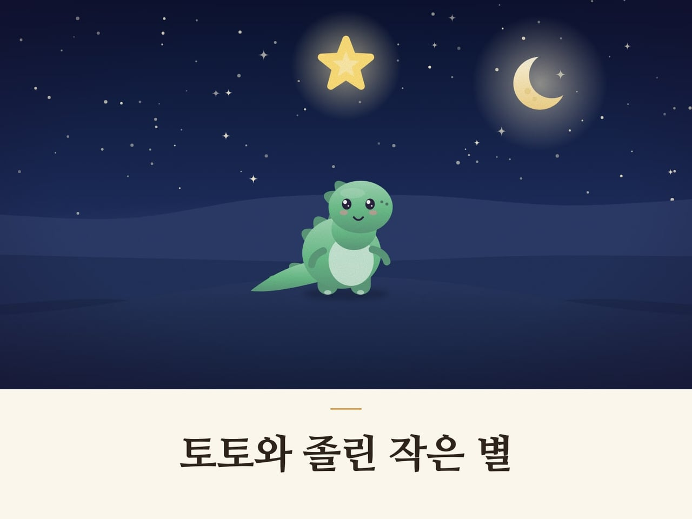
Picture books
"7살, 공룡, 잠자리 동화 써 줘."
Illustrations drawn in code, a PDF you can print.
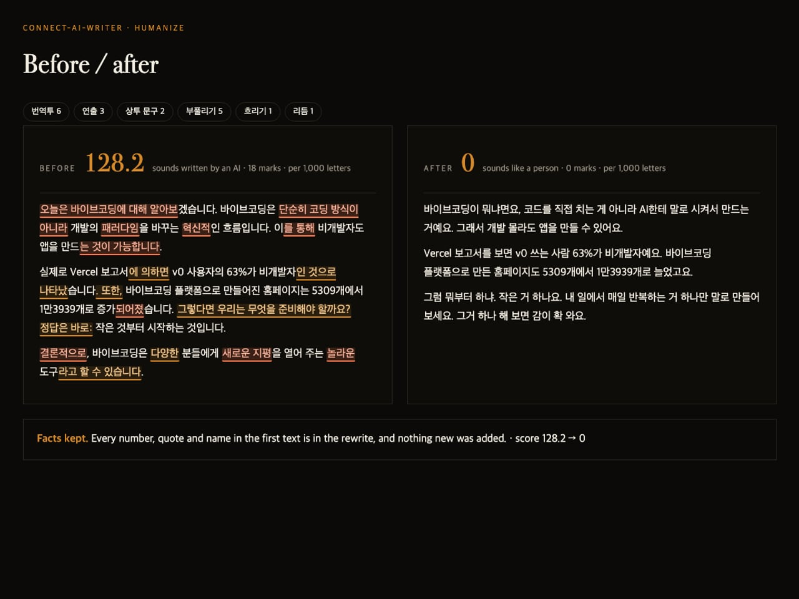
No AI tells
Translationese and stock phrases marked, then a check that the rewrite kept every number.
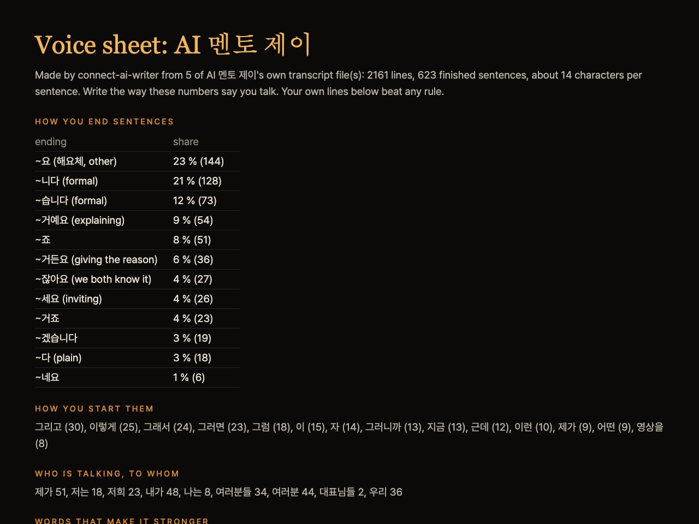
Your voice sheet
Counted from your own subtitles: how you end sentences, how you start them, your words.
Works with our other AI employees
"이 글로 모션그래픽 영상도 만들어 줘."
The writer hands the post to connect-ai-motion, which makes a vertical and a landscape video from the post's own words. 84.6% stays 84.6%. Drafts go to connect-ai-marketer for posting.
v0.1 vs v0.2
The same lesson video, the same Naver blog post. v0.2 scores the titles, puts the search words first and writes from my voice sheet.
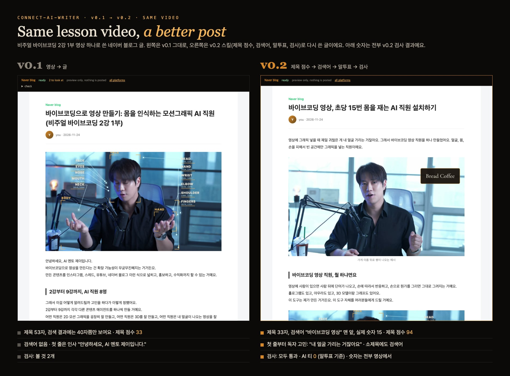
From one lesson video
Lesson 2 of my Visual Vibe Coding course, its Korean subtitles, and my voice sheet, a list of how I talk. That was the only input.
- Reads the video and subtitles
and picks the sharpest frames. - Writes for each platform its own way
in my words and my sentence endings. - Turns those frames into pictures
filling the frame, never cutting a face.
What came out
The actual posts and pictures from that run, in Korean, unedited.
제가 만든 AI 직원 하나 보여드릴게요.
영상을 넣으면 제 얼굴, 몸, 손을 다 인식하거든요.
그리고 그 주위 빈자리에 모션그래픽을 넣어 줘요.


이게 뭐냐면요.
Remotion, HyperFrames, Lottie, Three.js 같은 좋은 오픈소스들이 있잖아요.
여기에 몸 움직임을 인식하는 인공지능을 제가 추가를 했어요.
그래서 영상에 나오는 사람이랑 모션그래픽이 같이 움직이는 거예요.
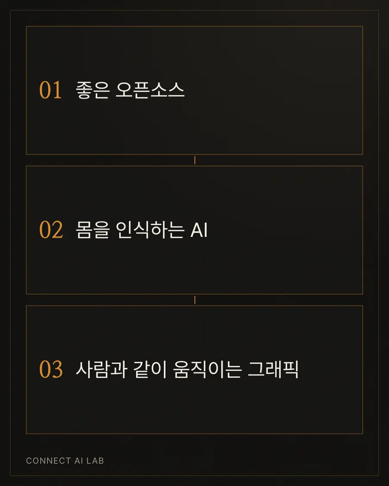

설치는 한 줄이에요.
npx connect-ai-video-motion install-skill
이거 하나 넣으면 Claude Code, Codex, Antigravity에 스킬이 한 번에 들어가요.

오늘 실습 과제는 이거예요.
얼굴이든 손이든, 내 몸의 일부가 나오는 제품 소개 영상이요.
얼굴 나오는 게 무서우면 스마트폰으로 커피 10초짜리 하나 찍어 보세요.
#바이브코딩

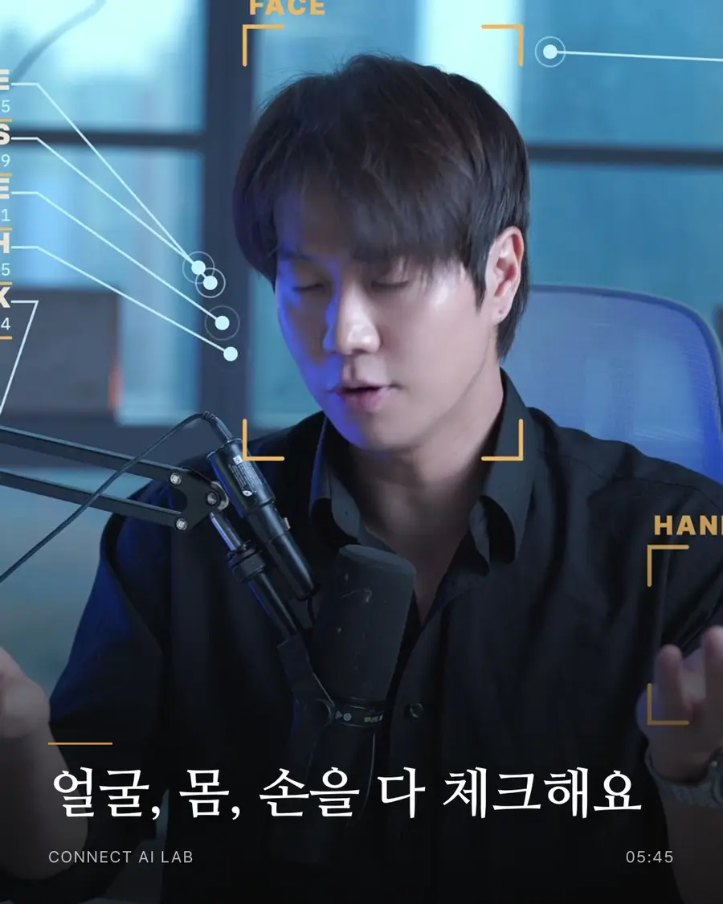
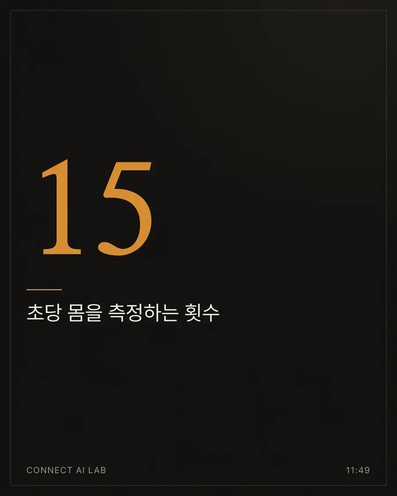
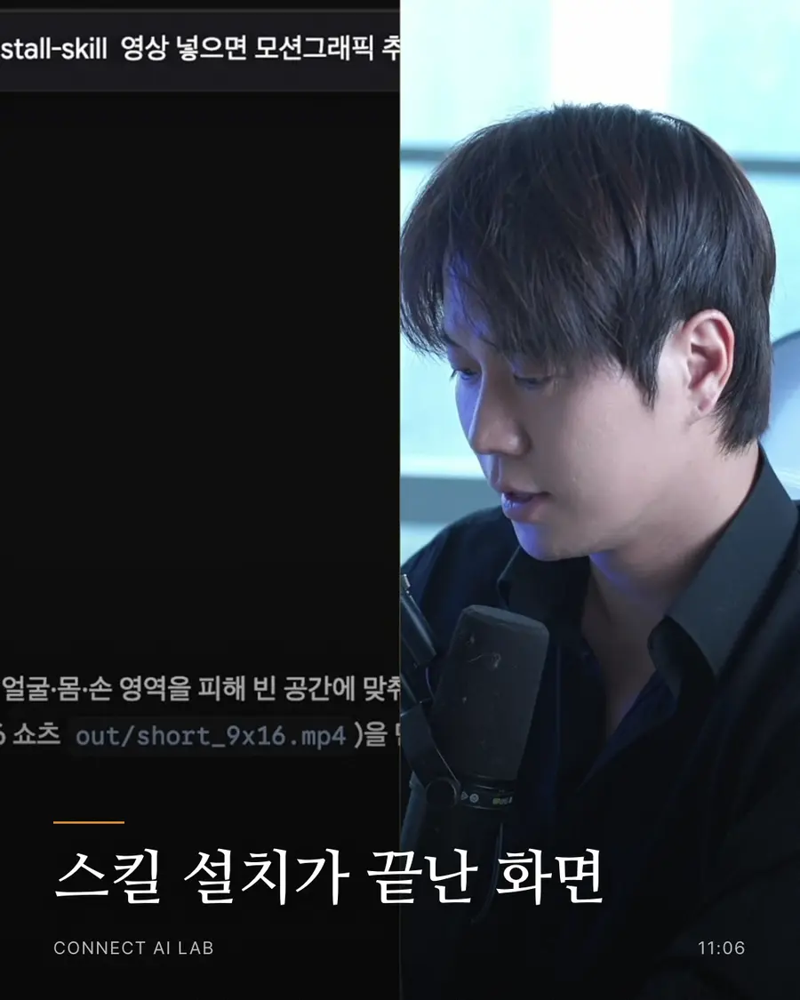
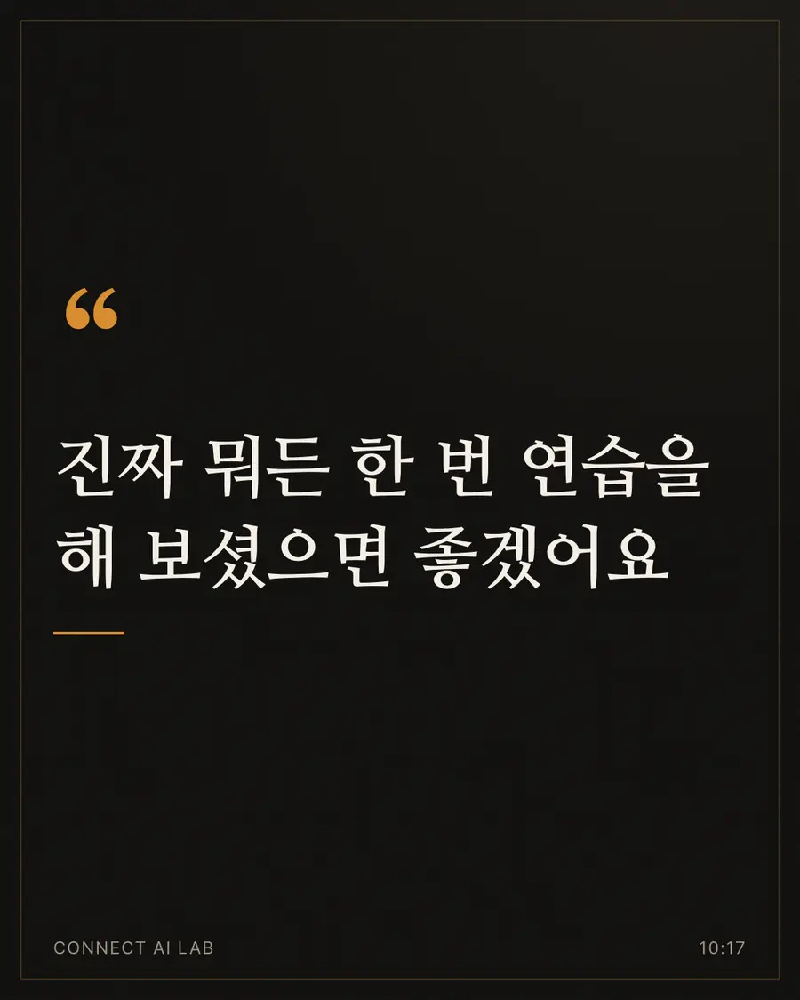
aimentorjay 영상을 넣으면 제 얼굴, 몸, 손을 다 인식하거든요.
그리고 그 주위 빈자리에 모션그래픽을 넣어 줘요.
설치는 한 줄이에요. npx connect-ai-video-motion install-skill
#바이브코딩 #AI직원 #모션그래픽
바이브코딩으로 영상 만들기: 몸을 인식하는 모션그래픽 AI 직원 (비주얼 바이브코딩 2강 1부)

안녕하세요, AI 멘토 제이입니다.
바이브코딩으로 영상을 만든다는 건 확장 가능성이 무궁무진해지는 거거든요.
만든 콘텐츠를 인스타그램, 스레드, 유튜브, 네이버 블로그 이런 식으로 넓히고, 홍보하고, 수익화까지 할 수 있는 거예요.
2강부터 9강까지, AI 직원 8명
그래서 이걸 어떻게 알려드릴까 고민을 하다가 이렇게 정했어요.
2강부터 9강까지 각각 다른 콘텐츠 에이전트를 하나씩 만들 거예요.
어떤 직원은 2D 모션 그래픽을 굉장히 잘 만들고, 어떤 직원은 3D를 잘 만들고, 어떤 직원은 내 얼굴이 나오는 영상을 잘 꾸미는 거죠.
그리고 10강에서 이 직원들이 각자의 지식과 스킬을 가지고 협업하는 걸 알려드릴 거예요.
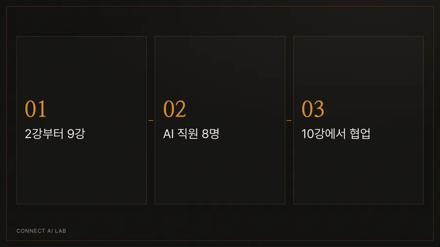
오늘 만드는 것: Video Motion
오늘 만드는 건 비디오 모션이에요.
영상에 사람이 있으면 사람 뒤에 단어가 나오고, 손에 따라서 반응하고, 손으로 뭔가를 그리면 그대로 그려지는 거예요.
홀로그램도 있고, 아우라도 있고, 3D 모델이랑 그래프도 있어요.
이 도구는 제가 만든 거거든요. 이 도구 자체를 여러분들에게 드릴 거예요.
어떻게 몸을 아냐면요
Three.js, Remotion, HyperFrames, Lottie 같은 좋은 오픈소스들이 있잖아요.
여기에 몸 움직임을 인식하는 인공지능을 제가 추가를 했어요.
윈도우에서는 구글의 MediaPipe, 맥에서는 Mac Vision이 얼굴, 눈, 코, 입, 손, 손목, 팔꿈치, 어깨, 손가락까지 다 체크를 해요.
초당 15회를 측정하는 거예요. 그래서 얼굴, 몸, 손을 피해서 빈 공간에만 그래픽을 넣을 수 있는 거죠.
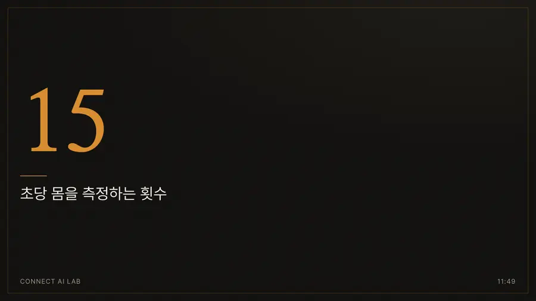
설치는 한 줄이에요
저는 구글 Antigravity로 설명드렸는데요, Codex나 Claude Code도 폴더 만들고 관리하는 건 똑같아요.
폴더를 하나 만들고 이름은 영영이라고 지었어요. 영상 넣으면 영상 주는 에이전트, 영영이요.
그다음에 이 한 줄을 넣으면 돼요.
npx connect-ai-video-motion install-skill
그러면 Claude Code, Codex, Antigravity로 한 번에 이 스킬이 들어가요.
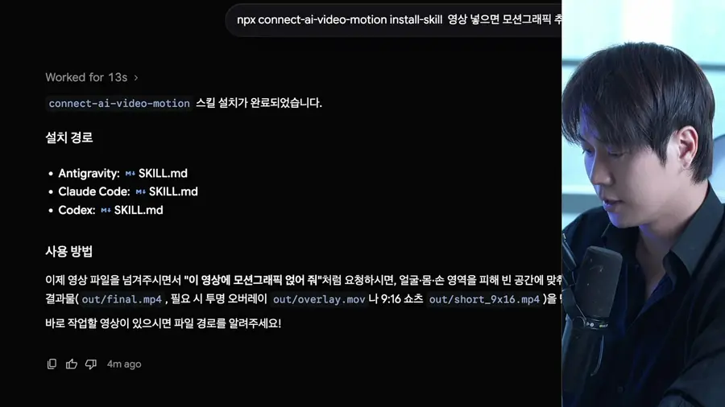
오늘 실습 과제
여러분들이 어떤 제품을 판매하고 싶다고 해 볼게요.
사람 없이 AI로만 만드는 콘텐츠도 물론 좋거든요. 근데 이번에는 얼굴이든 손이든 내 몸의 일부가 나오는 영상을 한번 만들어 보는 거예요.
얼굴 나오는 게 무섭잖아요. 그러면 스마트폰으로 커피 10초짜리 하나 찍어서 넣고, 태그 넣어서 가격 말해 줘, 이런 식으로 꾸며 보시면 돼요.
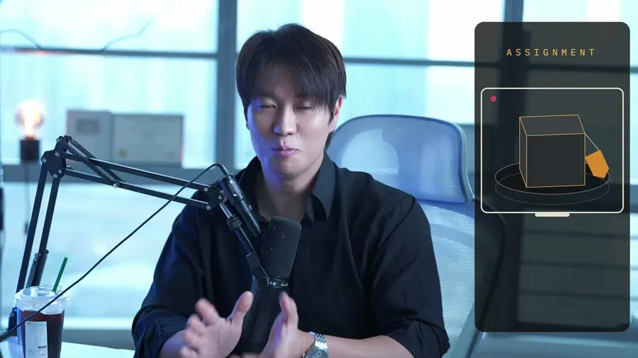
막히면 이렇게 물어보세요
어떻게 해야 될지 모르겠으면, 이걸로 콘텐츠 수익화할 수 있는 아이디어 10개 줘, 이렇게 한번 물어보세요.
저 같은 경우는 빵 가게 예시로 해 봤어요. 베이글이랑 Bread Coffee요.
각자의 상황에 맞는 콘텐츠를 계속 만들어 보셔야 돼요.
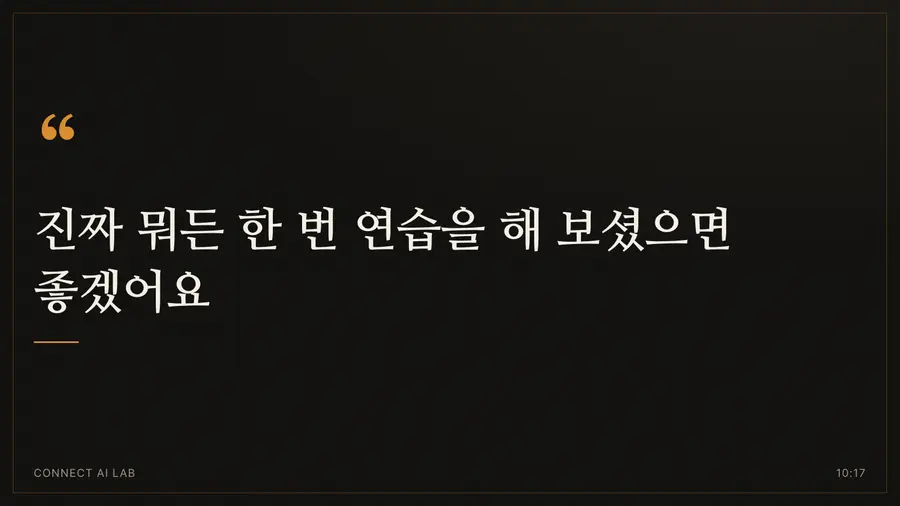
여기까지 설치를 하시고, 이제 카메라를 들고 영상을 찍어 보세요.
영상을 넣으면 제 얼굴, 몸, 손을 인식해서 그 주위에 모션그래픽을 넣어 주는 AI 직원을 만들었어요. 사람 뒤에 글씨, 손에 홀로그램, 이런 식으로요.
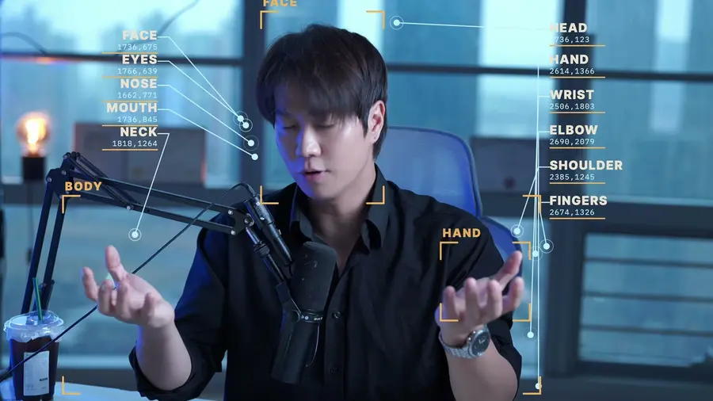
설치는 한 줄이에요.
npx connect-ai-video-motion install-skill
이거 하나면 Claude Code, Codex, Antigravity에 스킬이 한 번에 들어가요.

실습 과제는 내 몸의 일부가 나오는 제품 소개 영상이에요. 얼굴 나오는 게 부담스러우면 스마트폰으로 커피 10초짜리 하나 찍어 보세요.

제가 만든 AI 직원 하나 보여드릴게요.
영상을 넣으면 제 얼굴, 몸, 손을 다 인식하거든요. 그리고 그 주위 빈자리에 모션그래픽을 넣어 줘요.
Remotion, HyperFrames, Lottie, Three.js 같은 좋은 오픈소스들이 있잖아요.
여기에 몸 움직임을 인식하는 인공지능을 제가 추가를 했어요. 그래서 영상에 나오는 사람이랑 모션그래픽이 같이 움직이는 거예요.
2강부터 9강까지 각각 다른 콘텐츠 에이전트를 하나씩 만들 거예요.
그리고 10강에서 이 직원들이 각자의 지식과 스킬을 가지고 협업하는 걸 알려드릴 거예요.
설치는 한 줄이에요.
npx connect-ai-video-motion install-skill
#바이브코딩 #AI직원 #모션그래픽
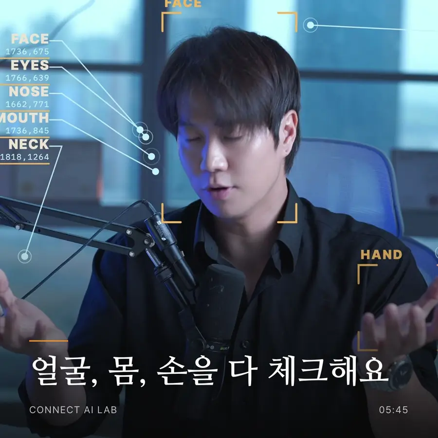
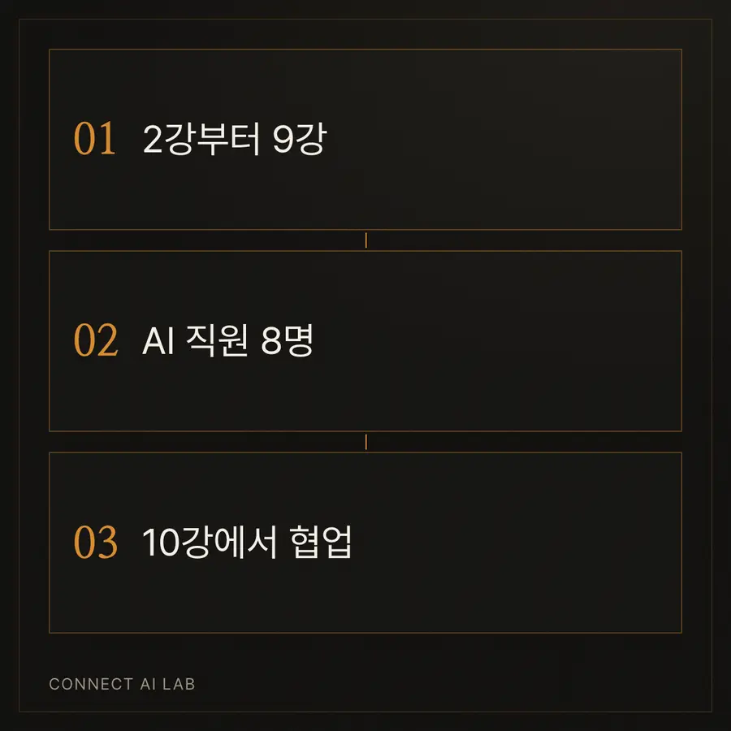
Checked before you post
If a post fails a check, it never reaches the editor.
Only your numbers
Any number or quote that isn't in your source is stopped.
Each platform's limit
Threads 500, X 280 (Korean characters count as 2), LinkedIn 3,000. Every post needs a picture.
Sounds like you
AI-sounding phrases, emoji and corner brackets are caught.

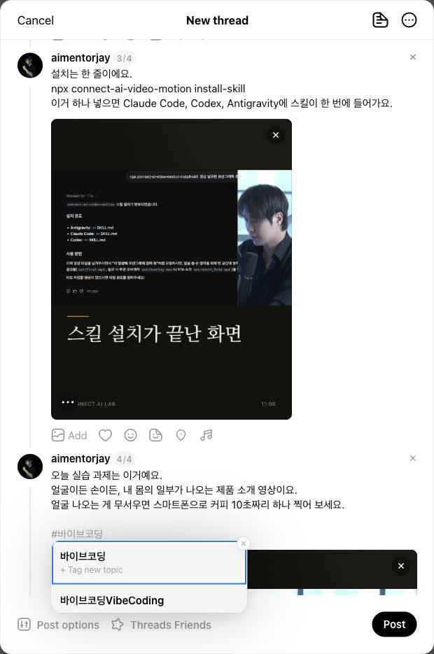
CONNECT AI LAB's AI employees
I'm building AI employees one by one, in the open. Grab the one you need first.
Business analystreversebusiness | Give it a website, and it breaks down how that business makes money. |
Video editorconnect-ai-video-motion | Give it your video, and it puts motion graphics in the empty space around you. |
Motion designerconnect-ai-motion | Give it a few lines of text, and it makes a motion graphics video. No footage needed. |
Marketing teamconnect-ai-marketer | Replies, social listening and uploads, 24/7 in your own browser. It posts what connect-ai-writer drafts. |
Writer · this oneconnect-ai-writer | Give it one video, and it writes a post for every platform in your voice, with pictures. |
I build AI employees like this one in the open, one by one, and show how on YouTube and in my course.
YouTube · Visual Vibe Coding · More open source